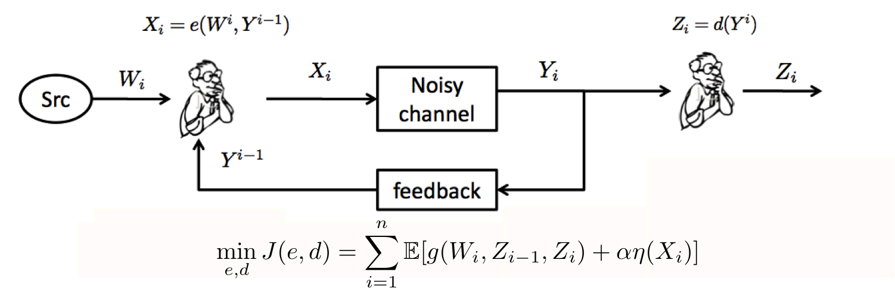
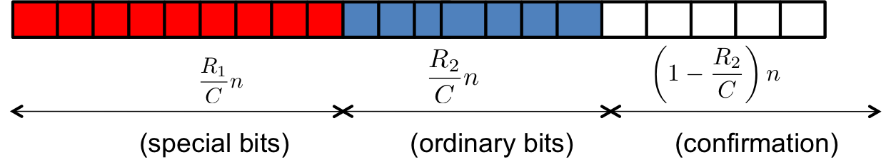
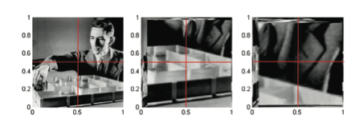

Research
Information theory and its interplay with control theory and decision theory.

Our focus is the design and analysis of communication schemes which can take feedback into account. Understanding feedback in dynamical and stochastic systems lies at the heart of control theory. This motivated us to look at the feedback communication problem from the lens of control theory. We were able to show that a feedback communication problem can be captured in a control-theoretic framework, by making some generalizations. To be precise, we look at the causal coding-decoding problem where the decision variables could be probability measures and the generalized cost function can capture information gains.
This opens up a set of results connecting information, control and team-decision theories:
Sequential Information Gain Metric
A metric that can used for sequential decision making problems. An application of this metric is used for optimal sensor selection in smart home appliances for minimizing power consumption.
Inverse Optimal Control for Two-Agent team decision problems.
Understanding the common goal of a team of interacting agents by observing their behavior.
HMMs and Feedback Communication
The relation between stability of Hidden Markov Models and reliability of feedback communication systems.
Multi-level Unequal Error Protection.
Fundamental limits and strategies for unequal error protection for a bitstream of
multiple classes.

Optimal Transportation Theory as a solver for Multi-Dim message point communciation.
Fast and Optimal feedback based communication schemes of a multi-dim message point. 
For example, the figure shows communicatin of a 2D message point on ![[0,1]^2](eqs/7956306659205054970-130.png) (e.g. (0.8,0.2)).
(e.g. (0.8,0.2)).